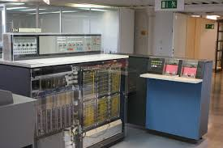
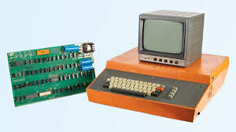

Galeria de Computadores Históricos

ENIAC
O ENIAC foi um dos primeiros computadores eletrônicos, desenvolvido na década de 1940.

IBM 360
O IBM 360 foi um marco na história dos mainframes, usado em grandes empresas nos anos 1960.
Apple I
O Apple I foi um dos primeiros computadores pessoais, desenvolvido por Steve Jobs e Steve Wozniak.